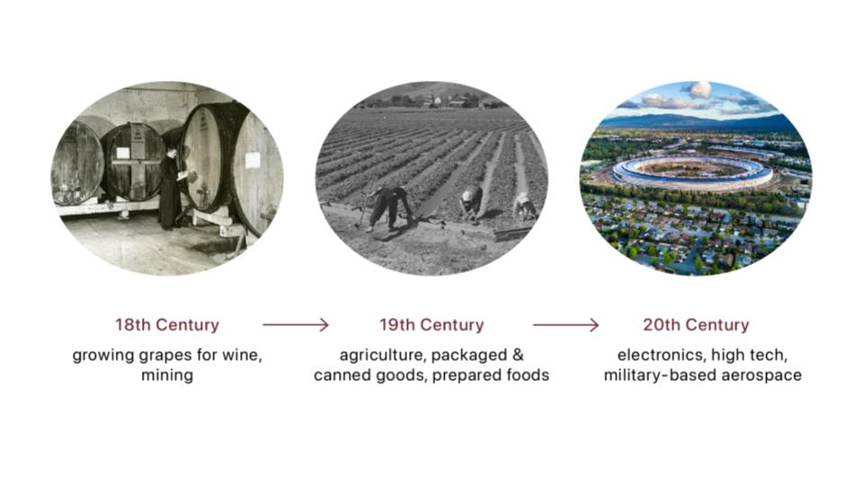
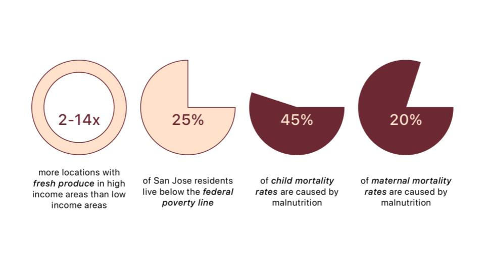

San Jose is known as the heart of the Silicon Valley today, a place of innovation, tech, and growth. However, poverty and food inequality are still prevalent, propelling health disparities throughout the Bay Area.

01. RESEARCH
Before San Jose became the heart of Silicon Valley that we know it to be today, viniculture or the growth of grapes for winemaking, was popular in the mid-1800s. Throughout the 19th and 20th Century, San Jose, and the rest of Santa Clara Valley, grew agriculture, packaged and canned goods, and prepared foods like sauces. These included orchard fruits, berries, tree nuts, and vegetables, in addition to packaging, canning, and shipping. Because harvesting produce is very labor intensive, labor unions were on the rise in the 1970s. After World War II, soldiers and veterans took advantage of labor and good ports, creating some of the first big industries within electronics, high tech, and military-based aerospace.
Despite the history and abundance of agriculture and food produced, poverty and food insecurity during pregnancy still exists. There are 2 to 14 times more fresh produce at grocery stores in high income areas in comparison to low income areas. 25% of the community lives below the federal poverty line. Additionally, maternal mortality rates in Black or African Americans are almost 6 times greater than those of white, asian or pacific islander, and hispanic or latino people, while infant mortality rates are 2-3 times greater. When looking at malnutrition in general, studies have shown that it causes 45% of child mortality and 20% of maternal mortality.
02. INSPIRATION
While there are many differing views surrounding surrounding the arc of human reproduction, its design is important to every living person because each person is alive today by being born. Within the pregnant body, the placenta has 5 main functions:
- Transport oxygen
- Deliver nutrients
- Manage waste
- Provide immunity
- Foster growth and development
Source: BabyCenter
Studies have shown that the nutrients given to the fetus before birth can affect that individual's mental and physical health their whole life. However, much of this connects to the foods that are accessible in the community, not just what the mother chooses to eat. Thus, I wanted to transport the functions of the placenta, as one of the main supporting organs within the pregnant body, to a community level in order to address food access within San Jose, a community with much socioeconomic disparity.
03. BROCHURE


Although San Jose is currently known for the abundance of tech, innovation, and potential for wealth, its original growth was due to the abundance of viniculture, agriculture, packaged and canned goods, and prepared foods. Despite this history of abudnace of agriculture and food produced, poverty and food insecurity during pregnancy still exists. Within the pregnant body, the placenta serves to bring oxygen, bring nutrients, manage waste, provide immunity, and foster the growth of the fetus. I want to propose an expansion of the Guadalupe Community Garden, that will transfer the functions of the placenta to a community in order to increase access to fresh foods through, promoting composting in the community, provide a space to create healthier meals, write to local politicians about food inequality, and host educational events on food sovereignty, maternal and infant health, and the intersection of the two.
In this project, I drew inspiration from nature - specifically the placenta - to propose an expansion to the Guadalupe Community Garden in San Jose, CA, located right next to the city's largest houseless people population, and just a few blocks from City Hall and major tech company headquarters. This project is featured in various outlets including the @designingmotherhood Instagram, the Design Philadelphia Designing Motherhood public program, and the eventual open syllabus that will result from this course.
→ Fall 2021 (8 Weeks)
→ DSGN 268: Biological Design
→ Instructors: Michelle Millar Fisher, Juliana Barton, Orkan Telhan
→ Teaching Assistant: Zoë Greggs